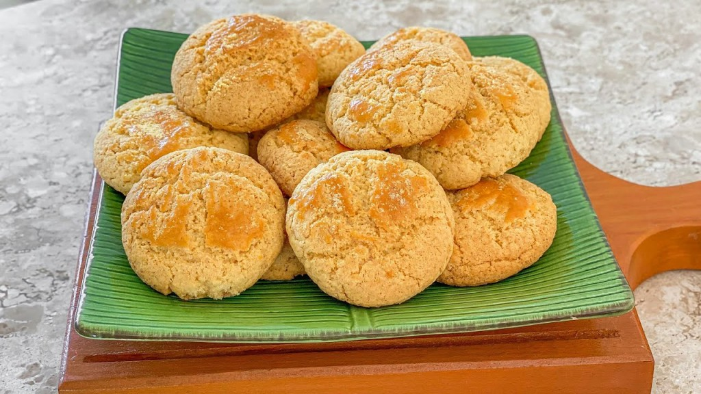

Broinha de fubá

Ingredientes
- 1 xícara de chá de fubá
- 1 xícara de chá de farinha de trigo tradicional sem fermento
- 1/2 xícara de chá de açúcar
- 1 colher de sopa de fermento químico em pó
- 3 colheres de sopa de manteiga
- 1 ovo
- 30 ml de leite integral
Modo de preparo
- Coloque os secos em uma tigela e misture.
-
Adicione a manteiga e misture com as mãos, apertando e amassando.
-
Acrescente o ovo, e acrescente o leite aos poucos conforme for
precisando para dar o ponto.
- O ponto é quando a massa estiver firme e modelável.
- Divida a massa em porções iguais.
-
Boleie as porções de massa e achate levemente na palma da mão, em
seguida coloque todas em uma fôrma untada e polvilhada farinha de
trigo deixando um espaço de aproximadamente 1 dedo de uma pra outra.
-
Finalize pincelando uma gema por cima das broas e salpique um pouco de
fubá por cima (opcional).
-
Asse em forno pré-aquecido a 180ºC por aproximadamente 25 minutos ou
até que elas fiquem bem douradinhas.